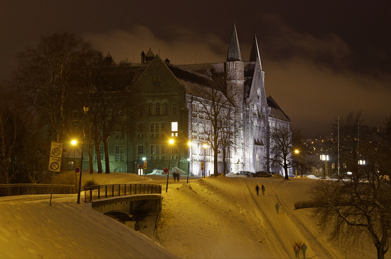

Hovedbygget
Hovedbygningen på Campus NTNU Gløshaugen i Trondheim er en av de fire første bygningene som ble oppført for Norges tekniske høgskole (NTH), alle tegnet av arkitekt Bredo Greve. Bygningen ble innviet da NTH åpnet i 1910, selv om bare den ca 105 meter lange hovedfløyen mot nord var ferdigstilt. Den siste av Greves tre planlagte fløyer mot sør sto ferdig i 1915.
Hovedbygningen er resultat av en arkitektkonkurranse. Greves motto for konkurranseprosjektet, «Vis à vis Domkirken», og hans utforming av hovedfasaden, viser at han var inspirert av middelalderarkitektur generelt og Nidarosdomen spesielt. Dette kommer også til syne i interiøret.